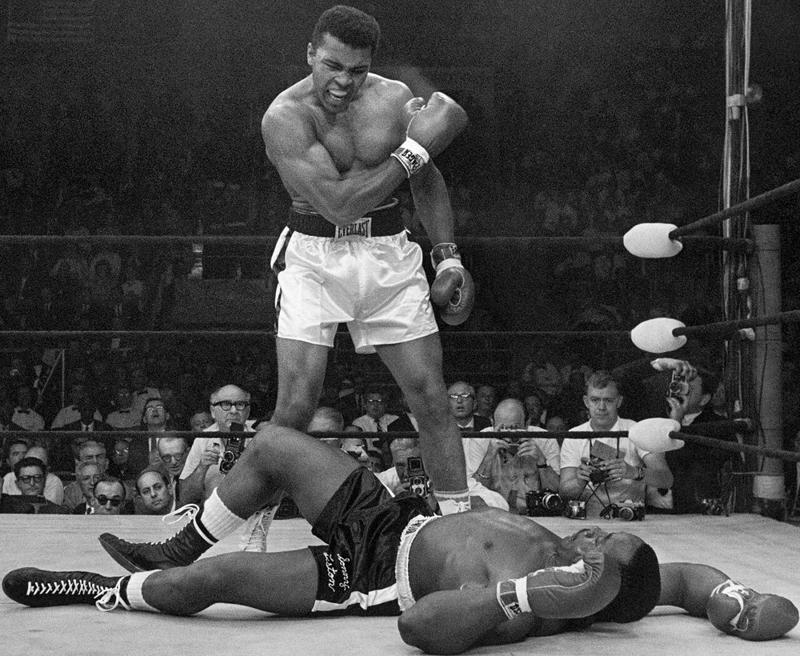

Muhammad Ali Standing over Sonny Liston
John Rooney · 25 May 1965 · Wire photograph, black and white
In copyright. Look and learn: shown for study, not for download.
The fight was held on 25 May 1965 in a junior hockey rink in Lewiston, Maine, a mill town of about 41,000 people, after the promoters had to find a new site in a hurry. It ended in the first round. Liston went down at 1:44 and the referee, Jersey Joe Walcott, stopped the fight at 2:12; many in the crowd had not seen the punch. This is the Associated Press wire photograph by John Rooney, as it ran in newspapers the next day.